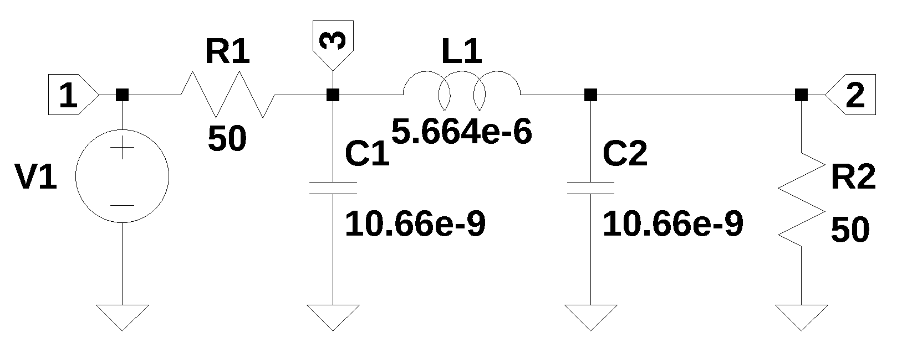
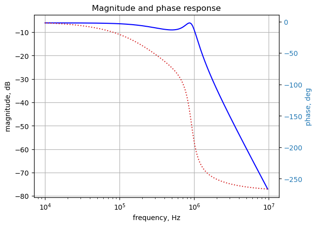
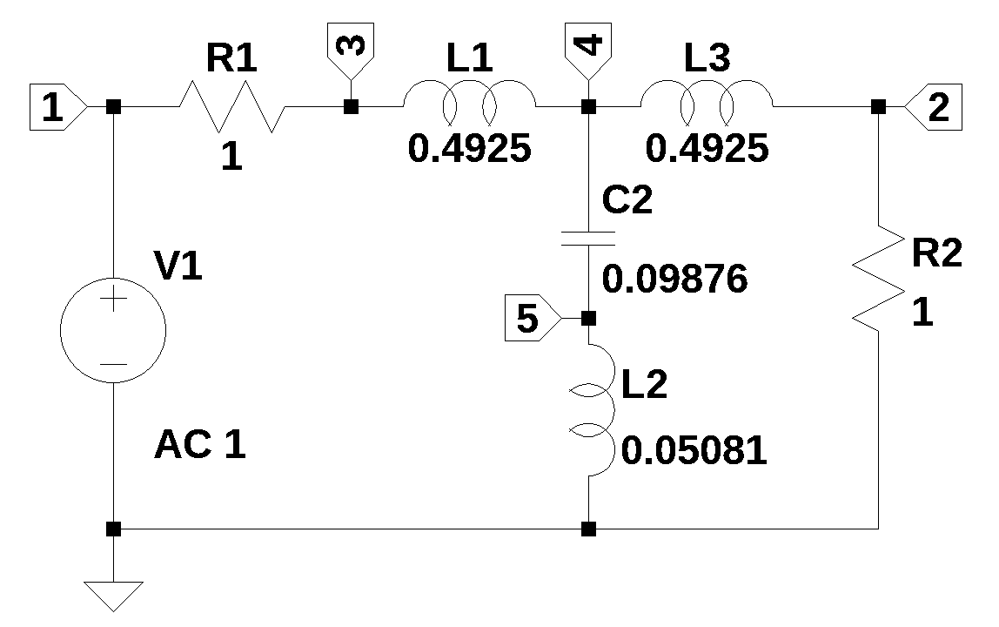
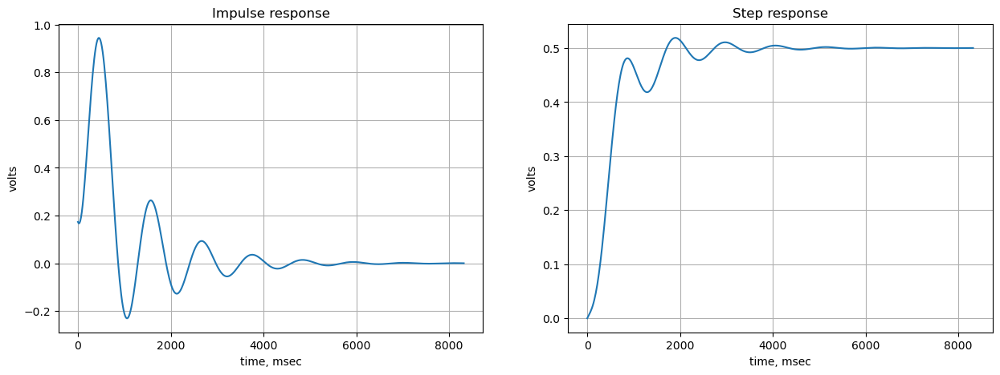

from sympy import *
import numpy as np
from tabulate import tabulate
import pandas as pd
from scipy import signal
import matplotlib.pyplot as plt
import SymMNA
from IPython.display import display, Markdown, Math, Latex
init_printing()8 Transient Analysis

Transient analysis in electrical circuit analysis is the study of a circuit’s behavior during the time it transitions from one steady-state condition to another, typically following a sudden change, such as the opening or closing of a switch or an abrupt change in the input signal. This period, known as the transient period, is characterized by time-varying voltages and currents, especially in circuits containing energy-storage elements like capacitors and inductors, whose voltage and current, respectively, cannot change instantaneously.
The circuit in Figure 8.1 is an Chebyshev low pass filter, with a 1 MHz cut off frequency, \(50\Omega\) termination and 3 dB of ripple in the pass band. Three dB of ripple in the pass band was designed in so that the transient response would have some ringing. The filter design tool from Marki Microwave (2025) was used to design the filter.
Load the following Python modules.
8.1 Circuit 1
The netlist generated by LTSpice is pasted into the cell below and some edits were made to remove the inductor series resistance and the independent source, V1, is set to a value of one.
net_list = '''
V1 1 0 1
R1 3 1 50
R2 2 0 50
C1 3 0 10.66e-9
L1 3 2 5.664e-6
C2 2 0 10.66e-9
'''Generate the network equations.
report, network_df, df2, A, X, Z = SymMNA.smna(net_list)
# Put matricies into SymPy
X = Matrix(X)
Z = Matrix(Z)
NE_sym = Eq(A*X,Z)Generate markdown text to display the network equations.
temp = ''
for i in range(len(X)):
temp += '${:s}$<br>'.format(latex(Eq((A*X)[i:i+1][0],Z[i])))
Markdown(temp)\(I_{V1} + \frac{v_{1}}{R_{1}} - \frac{v_{3}}{R_{1}} = 0\)
\(- I_{L1} + v_{2} \left(C_{2} s + \frac{1}{R_{2}}\right) = 0\)
\(I_{L1} + v_{3} \left(C_{1} s + \frac{1}{R_{1}}\right) - \frac{v_{1}}{R_{1}} = 0\)
\(v_{1} = V_{1}\)
\(- I_{L1} L_{1} s - v_{2} + v_{3} = 0\)
As shown above MNA generated many equations and these would be difficult to solve by hand. The equations are displade in matrix notation below.
The sysmbols generated by the Python code are extraced by the SymPy function free_symbols and then declared as SymPy variables.
Built a dictionary of element values.
# turn the free symbols into SymPy variables
var(str(NE_sym.free_symbols).replace('{','').replace('}',''))
# built a dictionary of element values.
element_values = SymMNA.get_part_values(network_df)Since the circuit is not too large, a symbolic solution can be easily obtained and displayed.
U_sym = solve(NE_sym,X)
temp = ''
for i in U_sym.keys():
temp += '${:s} = {:s}$<br>'.format(latex(i),latex(U_sym[i]))
Markdown(temp)\(v_{1} = V_{1}\)
\(v_{2} = \frac{R_{2} V_{1}}{C_{1} C_{2} L_{1} R_{1} R_{2} s^{3} + C_{1} L_{1} R_{1} s^{2} + C_{1} R_{1} R_{2} s + C_{2} L_{1} R_{2} s^{2} + C_{2} R_{1} R_{2} s + L_{1} s + R_{1} + R_{2}}\)
\(v_{3} = \frac{C_{2} L_{1} R_{2} V_{1} s^{2} + L_{1} V_{1} s + R_{2} V_{1}}{C_{1} C_{2} L_{1} R_{1} R_{2} s^{3} + C_{1} L_{1} R_{1} s^{2} + C_{1} R_{1} R_{2} s + C_{2} L_{1} R_{2} s^{2} + C_{2} R_{1} R_{2} s + L_{1} s + R_{1} + R_{2}}\)
\(I_{V1} = \frac{- C_{1} C_{2} L_{1} R_{2} V_{1} s^{3} - C_{1} L_{1} V_{1} s^{2} - C_{1} R_{2} V_{1} s - C_{2} R_{2} V_{1} s - V_{1}}{C_{1} C_{2} L_{1} R_{1} R_{2} s^{3} + C_{1} L_{1} R_{1} s^{2} + C_{1} R_{1} R_{2} s + C_{2} L_{1} R_{2} s^{2} + C_{2} R_{1} R_{2} s + L_{1} s + R_{1} + R_{2}}\)
\(I_{L1} = \frac{C_{2} R_{2} V_{1} s + V_{1}}{C_{1} C_{2} L_{1} R_{1} R_{2} s^{3} + C_{1} L_{1} R_{1} s^{2} + C_{1} R_{1} R_{2} s + C_{2} L_{1} R_{2} s^{2} + C_{2} R_{1} R_{2} s + L_{1} s + R_{1} + R_{2}}\)
After substituting the numeric component values for the elements, a numerical solution for the note voltages can be obtained.
NE = NE_sym.subs(element_values)
U = solve(NE,X)The transfer function \(H(s)=\frac {v_2(s)}{v_1(s)}\) is obtained below and plotted.
H = U[v2]/U[v1]
num, denom = fraction(H) #returns numerator and denominator
# convert symbolic to numpy polynomial
a = np.array(Poly(num, s).all_coeffs(), dtype=float)
b = np.array(Poly(denom, s).all_coeffs(), dtype=float)
x = np.logspace(4, 7, 200, endpoint=False)*2*np.pi
w, mag, phase = signal.bode((a,b), w=x) # returns: rad/s, mag in dB, phase in deg
fig, ax1 = plt.subplots()
ax1.set_ylabel('magnitude, dB')
ax1.set_xlabel('frequency, Hz')
plt.semilogx(w/(2*np.pi), mag,'-b') # Bode magnitude plot
ax1.tick_params(axis='y')
#ax1.set_ylim((-30,20))
plt.grid()
# instantiate a second y-axes that shares the same x-axis
ax2 = ax1.twinx()
color = 'tab:blue'
plt.semilogx(w/(2*np.pi), phase,':',color='tab:red') # Bode phase plot
ax2.set_ylabel('phase, deg',color=color)
ax2.tick_params(axis='y', labelcolor=color)
#ax2.set_ylim((-5,25))
plt.title('Magnitude and phase response')
plt.show()
The SciPy functions square and lsim can be used to create an input squarewave and simulate the output response as shown below.
sys_tf = signal.TransferFunction(a,b)
# define the time interval and create a square wave
t = np.linspace(0, 20e-6, 1000, endpoint=False)
ref_sqr_signal = signal.square(2*np.pi*1e5*t, duty=0.5)
# call lsim to generate the response signal
ref_t_step, ref_y_step, ref_x_step = signal.lsim(sys_tf, U=ref_sqr_signal, T=t)
plt.plot(ref_t_step*1e6, ref_sqr_signal, 'r', alpha = 1.0, linewidth=1, label='$v_1(t)$')
plt.plot(ref_t_step*1e6, ref_y_step,'b', linewidth = 1.0, label='$v_2(t)$')
plt.title('Square Wave Response')
plt.ylabel('volts')
plt.xlabel('time, usec')
plt.grid()
plt.legend(loc='best')
# show plot
plt.show()
add comments …
8.2 Circuit 2

The circuit above is a filter designed to explore transient analysis of a circuit using Python. The dependent source, V1, will be a time varying signal described below.
The circuit in Figure 8.2 is an elliptic low pass filter with a 1 Hz cut off and 3 dB of ripple in the pass band and 40 dB of attenuation in the stop band. Three dB of ripple in the pass band was designed in so that the transient response would have some ringing. The filter design tool linked here was used to design the filter.
8.2.1 Circuit analysis
The circuit analysis follows the steps listed below.
- Draw circuit in LTSpice, export netlist
- Generate network equations
- Symbolic solution
- AC sweep and plot the frequency response at the output
- Transient analysis
- Generate input signal for transient analysis
- Mostly following the procedure outlined here
- display the results
Transient analysis is somewhat more involved than the other types of circuit analysis, primarily because SymPy’s inverse Laplace transform is not very robust and can’t handle complicated expressions. The output equation needs to be simplified by writing some code to put the equation into forms that SymPy can deal with.
Load the following Python modules.
8.2.2 Load the netlist
The netlist generated by LTSpice is pasted into the cell below and some edits were made to remove the inductor series resistance and the independent source, V1, is set to a value of one.
net_list = '''
V1 1 0 1
R1 3 1 1
R2 2 0 1
L1 3 4 0.4925
L2 5 0 0.05081
C2 4 5 0.09876
L3 4 2 0.4925
'''Generate the network equations.
report, network_df, df2, A, X, Z = SymMNA.smna(net_list)
# Put matricies into SymPy
X = Matrix(X)
Z = Matrix(Z)
NE_sym = Eq(A*X,Z)Generate markdown text to display the network equations.
temp = ''
for i in range(len(X)):
temp += '${:s}$<br>'.format(latex(Eq((A*X)[i:i+1][0],Z[i])))
Markdown(temp)\(I_{V1} + \frac{v_{1}}{R_{1}} - \frac{v_{3}}{R_{1}} = 0\)
\(- I_{L3} + \frac{v_{2}}{R_{2}} = 0\)
\(I_{L1} - \frac{v_{1}}{R_{1}} + \frac{v_{3}}{R_{1}} = 0\)
\(C_{2} s v_{4} - C_{2} s v_{5} - I_{L1} + I_{L3} = 0\)
\(- C_{2} s v_{4} + C_{2} s v_{5} + I_{L2} = 0\)
\(v_{1} = V_{1}\)
\(- I_{L1} L_{1} s + v_{3} - v_{4} = 0\)
\(- I_{L2} L_{2} s + v_{5} = 0\)
\(- I_{L3} L_{3} s - v_{2} + v_{4} = 0\)
As shown above MNA generated many equations and these would be difficult to solve by hand. The equations are displade in matrix notation below.
NE_sym\(\displaystyle \left[\begin{matrix}I_{V1} + \frac{v_{1}}{R_{1}} - \frac{v_{3}}{R_{1}}\\- I_{L3} + \frac{v_{2}}{R_{2}}\\I_{L1} - \frac{v_{1}}{R_{1}} + \frac{v_{3}}{R_{1}}\\C_{2} s v_{4} - C_{2} s v_{5} - I_{L1} + I_{L3}\\- C_{2} s v_{4} + C_{2} s v_{5} + I_{L2}\\v_{1}\\- I_{L1} L_{1} s + v_{3} - v_{4}\\- I_{L2} L_{2} s + v_{5}\\- I_{L3} L_{3} s - v_{2} + v_{4}\end{matrix}\right] = \left[\begin{matrix}0\\0\\0\\0\\0\\V_{1}\\0\\0\\0\end{matrix}\right]\)
The sysmbols generated by the Python code are extraced by the SymPy function free_symbols and then declared as SymPy variables.
# turn the free symbols into SymPy variables
var(str(NE_sym.free_symbols).replace('{','').replace('}',''))\(\displaystyle \left( L_{1}, \ I_{L2}, \ I_{L3}, \ v_{4}, \ v_{1}, \ V_{1}, \ I_{V1}, \ I_{L1}, \ v_{5}, \ L_{2}, \ R_{1}, \ s, \ v_{2}, \ L_{3}, \ C_{2}, \ R_{2}, \ v_{3}\right)\)
Built a dictionary of element values.
element_values = SymMNA.get_part_values(network_df)
element_values\(\displaystyle \left\{ C_{2} : 0.09876, \ L_{1} : 0.4925, \ L_{2} : 0.05081, \ L_{3} : 0.4925, \ R_{1} : 1.0, \ R_{2} : 1.0, \ V_{1} : 1.0\right\}\)
8.2.3 Symbolic solution
Since the circuit is not too large, a symbolic solution can be easily obtained.
U_sym = solve(NE_sym,X)Display the symbolic solution
temp = ''
for i in U_sym.keys():
temp += '${:s} = {:s}$<br>'.format(latex(i),latex(U_sym[i]))
Markdown(temp)\(v_{1} = V_{1}\)
\(v_{2} = \frac{C_{2} L_{2} R_{2} V_{1} s^{2} + R_{2} V_{1}}{C_{2} L_{1} L_{2} s^{3} + C_{2} L_{1} L_{3} s^{3} + C_{2} L_{1} R_{2} s^{2} + C_{2} L_{2} L_{3} s^{3} + C_{2} L_{2} R_{1} s^{2} + C_{2} L_{2} R_{2} s^{2} + C_{2} L_{3} R_{1} s^{2} + C_{2} R_{1} R_{2} s + L_{1} s + L_{3} s + R_{1} + R_{2}}\)
\(v_{3} = \frac{C_{2} L_{1} L_{2} V_{1} s^{3} + C_{2} L_{1} L_{3} V_{1} s^{3} + C_{2} L_{1} R_{2} V_{1} s^{2} + C_{2} L_{2} L_{3} V_{1} s^{3} + C_{2} L_{2} R_{2} V_{1} s^{2} + L_{1} V_{1} s + L_{3} V_{1} s + R_{2} V_{1}}{C_{2} L_{1} L_{2} s^{3} + C_{2} L_{1} L_{3} s^{3} + C_{2} L_{1} R_{2} s^{2} + C_{2} L_{2} L_{3} s^{3} + C_{2} L_{2} R_{1} s^{2} + C_{2} L_{2} R_{2} s^{2} + C_{2} L_{3} R_{1} s^{2} + C_{2} R_{1} R_{2} s + L_{1} s + L_{3} s + R_{1} + R_{2}}\)
\(v_{4} = \frac{C_{2} L_{2} L_{3} V_{1} s^{3} + C_{2} L_{2} R_{2} V_{1} s^{2} + L_{3} V_{1} s + R_{2} V_{1}}{C_{2} L_{1} L_{2} s^{3} + C_{2} L_{1} L_{3} s^{3} + C_{2} L_{1} R_{2} s^{2} + C_{2} L_{2} L_{3} s^{3} + C_{2} L_{2} R_{1} s^{2} + C_{2} L_{2} R_{2} s^{2} + C_{2} L_{3} R_{1} s^{2} + C_{2} R_{1} R_{2} s + L_{1} s + L_{3} s + R_{1} + R_{2}}\)
\(v_{5} = \frac{C_{2} L_{2} L_{3} V_{1} s^{3} + C_{2} L_{2} R_{2} V_{1} s^{2}}{C_{2} L_{1} L_{2} s^{3} + C_{2} L_{1} L_{3} s^{3} + C_{2} L_{1} R_{2} s^{2} + C_{2} L_{2} L_{3} s^{3} + C_{2} L_{2} R_{1} s^{2} + C_{2} L_{2} R_{2} s^{2} + C_{2} L_{3} R_{1} s^{2} + C_{2} R_{1} R_{2} s + L_{1} s + L_{3} s + R_{1} + R_{2}}\)
\(I_{V1} = \frac{- C_{2} L_{2} V_{1} s^{2} - C_{2} L_{3} V_{1} s^{2} - C_{2} R_{2} V_{1} s - V_{1}}{C_{2} L_{1} L_{2} s^{3} + C_{2} L_{1} L_{3} s^{3} + C_{2} L_{1} R_{2} s^{2} + C_{2} L_{2} L_{3} s^{3} + C_{2} L_{2} R_{1} s^{2} + C_{2} L_{2} R_{2} s^{2} + C_{2} L_{3} R_{1} s^{2} + C_{2} R_{1} R_{2} s + L_{1} s + L_{3} s + R_{1} + R_{2}}\)
\(I_{L1} = \frac{C_{2} L_{2} V_{1} s^{2} + C_{2} L_{3} V_{1} s^{2} + C_{2} R_{2} V_{1} s + V_{1}}{C_{2} L_{1} L_{2} s^{3} + C_{2} L_{1} L_{3} s^{3} + C_{2} L_{1} R_{2} s^{2} + C_{2} L_{2} L_{3} s^{3} + C_{2} L_{2} R_{1} s^{2} + C_{2} L_{2} R_{2} s^{2} + C_{2} L_{3} R_{1} s^{2} + C_{2} R_{1} R_{2} s + L_{1} s + L_{3} s + R_{1} + R_{2}}\)
\(I_{L2} = \frac{C_{2} L_{3} V_{1} s^{2} + C_{2} R_{2} V_{1} s}{C_{2} L_{1} L_{2} s^{3} + C_{2} L_{1} L_{3} s^{3} + C_{2} L_{1} R_{2} s^{2} + C_{2} L_{2} L_{3} s^{3} + C_{2} L_{2} R_{1} s^{2} + C_{2} L_{2} R_{2} s^{2} + C_{2} L_{3} R_{1} s^{2} + C_{2} R_{1} R_{2} s + L_{1} s + L_{3} s + R_{1} + R_{2}}\)
\(I_{L3} = \frac{C_{2} L_{2} V_{1} s^{2} + V_{1}}{C_{2} L_{1} L_{2} s^{3} + C_{2} L_{1} L_{3} s^{3} + C_{2} L_{1} R_{2} s^{2} + C_{2} L_{2} L_{3} s^{3} + C_{2} L_{2} R_{1} s^{2} + C_{2} L_{2} R_{2} s^{2} + C_{2} L_{3} R_{1} s^{2} + C_{2} R_{1} R_{2} s + L_{1} s + L_{3} s + R_{1} + R_{2}}\)
8.2.4 AC Sweep
After substituting the numeric component values for the elements, a numerical solution for the note voltages can be obtained.
NE = NE_sym.subs(element_values)
NE\(\displaystyle \left[\begin{matrix}I_{V1} + 1.0 v_{1} - 1.0 v_{3}\\- I_{L3} + 1.0 v_{2}\\I_{L1} - 1.0 v_{1} + 1.0 v_{3}\\- I_{L1} + I_{L3} + 0.09876 s v_{4} - 0.09876 s v_{5}\\I_{L2} - 0.09876 s v_{4} + 0.09876 s v_{5}\\v_{1}\\- 0.4925 I_{L1} s + v_{3} - v_{4}\\- 0.05081 I_{L2} s + v_{5}\\- 0.4925 I_{L3} s - v_{2} + v_{4}\end{matrix}\right] = \left[\begin{matrix}0\\0\\0\\0\\0\\1.0\\0\\0\\0\end{matrix}\right]\)
U_ac = solve(NE,X)8.2.5 Plot the frequency response at node 2
H = U_ac[v2]
num, denom = fraction(H) #returns numerator and denominator
# convert symbolic to numpy polynomial
a = np.array(Poly(num, s).all_coeffs(), dtype=float)
b = np.array(Poly(denom, s).all_coeffs(), dtype=float)
system = (a, b)
x = np.logspace(-1, 1, 200, endpoint=False)*2*np.pi
w, mag, phase = signal.bode(system, w=x) # returns: rad/s, mag in dB, phase in deg
fig, ax1 = plt.subplots()
ax1.set_ylabel('magnitude, dB')
ax1.set_xlabel('frequency, Hz')
plt.semilogx(w/(2*np.pi), mag,'-b') # Bode magnitude plot
ax1.tick_params(axis='y')
#ax1.set_ylim((-30,20))
plt.grid()
# instantiate a second y-axes that shares the same x-axis
ax2 = ax1.twinx()
color = 'tab:blue'
plt.semilogx(w/(2*np.pi), phase,':',color='tab:red') # Bode phase plot
ax2.set_ylabel('phase, deg',color=color)
ax2.tick_params(axis='y', labelcolor=color)
#ax2.set_ylim((-5,25))
plt.title('Magnitude and phase response')
plt.show()
8.2.6 Low pass filter impulse and step response
Use the SciPy functions impulse and step to plot the impulse and step response of the system.
The impulse and step response of the filter are plotted below. Any linear, time-invariant is completely characterized by its impulse response. The transfer function is the Laplace transform of the impulse response. The impulse response defines the response of a linear time-invariant system for all frequencies.
plt.subplots(1,2,figsize=(15, 5))
# using subplot function and creating
# plot one
plt.subplot(1, 2, 1)
# impulse response
t, y = signal.impulse(system,N=500)
plt.plot(t/1e-3, y)
plt.title('Impulse response')
plt.ylabel('volts')
plt.xlabel('time, msec')
plt.grid()
# using subplot function and creating plot two
plt.subplot(1, 2, 2)
t, y = signal.step(system,N=500)
plt.plot(t/1e-3, y)
plt.title('Step response')
plt.ylabel('volts')
plt.xlabel('time, msec')
plt.grid()
# show plot
plt.show()
The results obtained from SciPy’s step2 function can be compared to the transient response results obtained below.
8.2.7 Transient Analysis
The input signal for the filter circuit is defined by using SymPy’s Heaveside function. The signal has a positive step at t=0, followed by a return to zero amplitude at t=5.
Declare SymPy symbols needed during the analysis.
t = symbols('t',positive=True) # t > 0V1_t = 1*Heaviside(t)*(1-Heaviside(t-5))
V1_t\(\displaystyle 1 - \theta\left(t - 5\right)\)
Use the lambdify function to convert the input signal to a function for plotting.
func_V1_t = lambdify(t, V1_t) The time domain description of the input signal is comvertered to the frequency domain with SymPy’s Laplace transform function.
V1_s = laplace_transform(V1_t, t, s, noconds=True)
V1_s\(\displaystyle \frac{1}{s} - \frac{e^{- 5 s}}{s}\)
Put the component values into the network equations and set V1 equal to the Laplace of the input signal.
element_values[V1] = V1_s
NE_trans = NE_sym.subs(element_values)
NE_trans\(\displaystyle \left[\begin{matrix}I_{V1} + 1.0 v_{1} - 1.0 v_{3}\\- I_{L3} + 1.0 v_{2}\\I_{L1} - 1.0 v_{1} + 1.0 v_{3}\\- I_{L1} + I_{L3} + 0.09876 s v_{4} - 0.09876 s v_{5}\\I_{L2} - 0.09876 s v_{4} + 0.09876 s v_{5}\\v_{1}\\- 0.4925 I_{L1} s + v_{3} - v_{4}\\- 0.05081 I_{L2} s + v_{5}\\- 0.4925 I_{L3} s - v_{2} + v_{4}\end{matrix}\right] = \left[\begin{matrix}0\\0\\0\\0\\0\\\frac{1}{s} - \frac{e^{- 5 s}}{s}\\0\\0\\0\end{matrix}\right]\)
Solve the newtork equations for the transient input and display the results.
U_trans = solve(NE_trans,X)
temp = ''
for i in U_trans.keys():
temp += '${:s} = {:s}$<br>'.format(latex(i),latex(U_trans[i]))
Markdown(temp)\(v_{1} = \frac{1}{s} - \frac{e^{- 5.0 s}}{s}\)
\(v_{2} = \frac{1254498900.0 s^{2} e^{5.0 s}}{7224395229.0 s^{4} e^{5.0 s} + 26828647800.0 s^{3} e^{5.0 s} + 270940000000.0 s^{2} e^{5.0 s} + 500000000000.0 s e^{5.0 s}} - \frac{1254498900.0 s^{2}}{7224395229.0 s^{4} e^{5.0 s} + 26828647800.0 s^{3} e^{5.0 s} + 270940000000.0 s^{2} e^{5.0 s} + 500000000000.0 s e^{5.0 s}} + \frac{250000000000.0 e^{5.0 s}}{7224395229.0 s^{4} e^{5.0 s} + 26828647800.0 s^{3} e^{5.0 s} + 270940000000.0 s^{2} e^{5.0 s} + 500000000000.0 s e^{5.0 s}} - \frac{250000000000.0}{7224395229.0 s^{4} e^{5.0 s} + 26828647800.0 s^{3} e^{5.0 s} + 270940000000.0 s^{2} e^{5.0 s} + 500000000000.0 s e^{5.0 s}}\)
\(v_{3} = \frac{7224395229.0 s^{3} e^{5.0 s}}{7224395229.0 s^{4} e^{5.0 s} + 26828647800.0 s^{3} e^{5.0 s} + 270940000000.0 s^{2} e^{5.0 s} + 500000000000.0 s e^{5.0 s}} - \frac{7224395229.0 s^{3}}{7224395229.0 s^{4} e^{5.0 s} + 26828647800.0 s^{3} e^{5.0 s} + 270940000000.0 s^{2} e^{5.0 s} + 500000000000.0 s e^{5.0 s}} + \frac{13414323900.0 s^{2} e^{5.0 s}}{7224395229.0 s^{4} e^{5.0 s} + 26828647800.0 s^{3} e^{5.0 s} + 270940000000.0 s^{2} e^{5.0 s} + 500000000000.0 s e^{5.0 s}} - \frac{13414323900.0 s^{2}}{7224395229.0 s^{4} e^{5.0 s} + 26828647800.0 s^{3} e^{5.0 s} + 270940000000.0 s^{2} e^{5.0 s} + 500000000000.0 s e^{5.0 s}} + \frac{246250000000.0 s e^{5.0 s}}{7224395229.0 s^{4} e^{5.0 s} + 26828647800.0 s^{3} e^{5.0 s} + 270940000000.0 s^{2} e^{5.0 s} + 500000000000.0 s e^{5.0 s}} - \frac{246250000000.0 s}{7224395229.0 s^{4} e^{5.0 s} + 26828647800.0 s^{3} e^{5.0 s} + 270940000000.0 s^{2} e^{5.0 s} + 500000000000.0 s e^{5.0 s}} + \frac{250000000000.0 e^{5.0 s}}{7224395229.0 s^{4} e^{5.0 s} + 26828647800.0 s^{3} e^{5.0 s} + 270940000000.0 s^{2} e^{5.0 s} + 500000000000.0 s e^{5.0 s}} - \frac{250000000000.0}{7224395229.0 s^{4} e^{5.0 s} + 26828647800.0 s^{3} e^{5.0 s} + 270940000000.0 s^{2} e^{5.0 s} + 500000000000.0 s e^{5.0 s}}\)
\(v_{4} = \frac{12544989.0 s^{2} e^{5.0 s}}{146688228.0 s^{3} e^{5.0 s} + 246900000.0 s^{2} e^{5.0 s} + 5000000000.0 s e^{5.0 s}} - \frac{12544989.0 s^{2}}{146688228.0 s^{3} e^{5.0 s} + 246900000.0 s^{2} e^{5.0 s} + 5000000000.0 s e^{5.0 s}} + \frac{2500000000.0 e^{5.0 s}}{146688228.0 s^{3} e^{5.0 s} + 246900000.0 s^{2} e^{5.0 s} + 5000000000.0 s e^{5.0 s}} - \frac{2500000000.0}{146688228.0 s^{3} e^{5.0 s} + 246900000.0 s^{2} e^{5.0 s} + 5000000000.0 s e^{5.0 s}}\)
\(v_{5} = \frac{12544989.0 s e^{5.0 s}}{146688228.0 s^{2} e^{5.0 s} + 246900000.0 s e^{5.0 s} + 5000000000.0 e^{5.0 s}} - \frac{12544989.0 s}{146688228.0 s^{2} e^{5.0 s} + 246900000.0 s e^{5.0 s} + 5000000000.0 e^{5.0 s}}\)
\(I_{V1} = - \frac{13414323900.0 s^{2} e^{5.0 s}}{7224395229.0 s^{4} e^{5.0 s} + 26828647800.0 s^{3} e^{5.0 s} + 270940000000.0 s^{2} e^{5.0 s} + 500000000000.0 s e^{5.0 s}} + \frac{13414323900.0 s^{2}}{7224395229.0 s^{4} e^{5.0 s} + 26828647800.0 s^{3} e^{5.0 s} + 270940000000.0 s^{2} e^{5.0 s} + 500000000000.0 s e^{5.0 s}} - \frac{24690000000.0 s e^{5.0 s}}{7224395229.0 s^{4} e^{5.0 s} + 26828647800.0 s^{3} e^{5.0 s} + 270940000000.0 s^{2} e^{5.0 s} + 500000000000.0 s e^{5.0 s}} + \frac{24690000000.0 s}{7224395229.0 s^{4} e^{5.0 s} + 26828647800.0 s^{3} e^{5.0 s} + 270940000000.0 s^{2} e^{5.0 s} + 500000000000.0 s e^{5.0 s}} - \frac{250000000000.0 e^{5.0 s}}{7224395229.0 s^{4} e^{5.0 s} + 26828647800.0 s^{3} e^{5.0 s} + 270940000000.0 s^{2} e^{5.0 s} + 500000000000.0 s e^{5.0 s}} + \frac{250000000000.0}{7224395229.0 s^{4} e^{5.0 s} + 26828647800.0 s^{3} e^{5.0 s} + 270940000000.0 s^{2} e^{5.0 s} + 500000000000.0 s e^{5.0 s}}\)
\(I_{L1} = \frac{13414323900.0 s^{2} e^{5.0 s}}{7224395229.0 s^{4} e^{5.0 s} + 26828647800.0 s^{3} e^{5.0 s} + 270940000000.0 s^{2} e^{5.0 s} + 500000000000.0 s e^{5.0 s}} - \frac{13414323900.0 s^{2}}{7224395229.0 s^{4} e^{5.0 s} + 26828647800.0 s^{3} e^{5.0 s} + 270940000000.0 s^{2} e^{5.0 s} + 500000000000.0 s e^{5.0 s}} + \frac{24690000000.0 s e^{5.0 s}}{7224395229.0 s^{4} e^{5.0 s} + 26828647800.0 s^{3} e^{5.0 s} + 270940000000.0 s^{2} e^{5.0 s} + 500000000000.0 s e^{5.0 s}} - \frac{24690000000.0 s}{7224395229.0 s^{4} e^{5.0 s} + 26828647800.0 s^{3} e^{5.0 s} + 270940000000.0 s^{2} e^{5.0 s} + 500000000000.0 s e^{5.0 s}} + \frac{250000000000.0 e^{5.0 s}}{7224395229.0 s^{4} e^{5.0 s} + 26828647800.0 s^{3} e^{5.0 s} + 270940000000.0 s^{2} e^{5.0 s} + 500000000000.0 s e^{5.0 s}} - \frac{250000000000.0}{7224395229.0 s^{4} e^{5.0 s} + 26828647800.0 s^{3} e^{5.0 s} + 270940000000.0 s^{2} e^{5.0 s} + 500000000000.0 s e^{5.0 s}}\)
\(I_{L2} = \frac{61725000.0 e^{5.0 s}}{36672057.0 s^{2} e^{5.0 s} + 61725000.0 s e^{5.0 s} + 1250000000.0 e^{5.0 s}} - \frac{61725000.0}{36672057.0 s^{2} e^{5.0 s} + 61725000.0 s e^{5.0 s} + 1250000000.0 e^{5.0 s}}\)
\(I_{L3} = \frac{1254498900.0 s^{2} e^{5.0 s}}{7224395229.0 s^{4} e^{5.0 s} + 26828647800.0 s^{3} e^{5.0 s} + 270940000000.0 s^{2} e^{5.0 s} + 500000000000.0 s e^{5.0 s}} - \frac{1254498900.0 s^{2}}{7224395229.0 s^{4} e^{5.0 s} + 26828647800.0 s^{3} e^{5.0 s} + 270940000000.0 s^{2} e^{5.0 s} + 500000000000.0 s e^{5.0 s}} + \frac{250000000000.0 e^{5.0 s}}{7224395229.0 s^{4} e^{5.0 s} + 26828647800.0 s^{3} e^{5.0 s} + 270940000000.0 s^{2} e^{5.0 s} + 500000000000.0 s e^{5.0 s}} - \frac{250000000000.0}{7224395229.0 s^{4} e^{5.0 s} + 26828647800.0 s^{3} e^{5.0 s} + 270940000000.0 s^{2} e^{5.0 s} + 500000000000.0 s e^{5.0 s}}\)
The equations for the solution are complex and long, but are easy to obtain and display.
The voltage on node 2 is the output of the filter. The expression is symplified with the chain of operators applied to the expression; nsimplify(), simplify(), expand() and together().
H = U_trans[v2].nsimplify().simplify().expand().together()
H\(\displaystyle \frac{100 \cdot \left(12544989 s^{2} e^{5 s} - 12544989 s^{2} + 2500000000 e^{5 s} - 2500000000\right) e^{- 5 s}}{s \left(7224395229 s^{3} + 26828647800 s^{2} + 270940000000 s + 500000000000\right)}\)
All the time dealy terms are in the numerator.
Extract the numerator and denominator and display.
n, d = fraction(H)
display('numerator', n, 'denominator', d)'numerator'\(\displaystyle 1254498900 s^{2} e^{5 s} - 1254498900 s^{2} + 250000000000 e^{5 s} - 250000000000\)
'denominator'\(\displaystyle s \left(7224395229 s^{3} + 26828647800 s^{2} + 270940000000 s + 500000000000\right) e^{5 s}\)
Each of the numerator terms can be put over the common denominator.
terms = [a / d for a in n.args]
display(terms)\(\displaystyle \left[ - \frac{250000000000 e^{- 5 s}}{s \left(7224395229 s^{3} + 26828647800 s^{2} + 270940000000 s + 500000000000\right)}, \ - \frac{1254498900 s e^{- 5 s}}{7224395229 s^{3} + 26828647800 s^{2} + 270940000000 s + 500000000000}, \ \frac{250000000000}{s \left(7224395229 s^{3} + 26828647800 s^{2} + 270940000000 s + 500000000000\right)}, \ \frac{1254498900 s}{7224395229 s^{3} + 26828647800 s^{2} + 270940000000 s + 500000000000}\right]\)
The following code processes each of the terms obtained above.
- The time delay operator \(e^{-ts}\) is removed from the xpression and the value of the time delay is saved in a list.
- use the SciPy residue function to get the partial-fraction expansion residues and poles
- build the partial expansion terms and find the inverse Laplace of each one and save
time_delay = []
delay = []
N = []
for p1 in terms:
# look for and remove the time delay
if len(p1.find(exp)) == 1:
delay = p1.find(exp).pop()
time_delay.append(list(delay.atoms())[0])
ans = p1/p1.find(exp).pop()
else:
ans = p1
time_delay.append(0)
# use the SciPy residue function to get the partial-fraction expansion residues and poles
n, d = fraction(ans)
cn = Poly(n, s).all_coeffs()
cd = Poly(d, s).all_coeffs()
r, p, k = signal.residue(cn, cd, tol=0.001, rtype='avg')
# build a symbolic expression for each of the residues and find the inverse Laplace of each one and save
z = 0
for i in range(len(r)):
m = (r[i]/(s-p[i])) #.nsimplify()
z += inverse_laplace_transform(m, s, t)
N.append(z)31 Aug 2025: fixed loop index in 1st for loop, was i now p1.
The time delays associated with each term are:
time_delay\(\displaystyle \left[ -5, \ -5, \ 0, \ 0\right]\)
The time domain version of each of the terms is displayed below.
N\(\displaystyle \left[ 1.0 \left(\left(0.0868202525095611 - 0.00506716236561563 i\right) \sin{\left(5.77733847617481 t \right)} + \left(0.00506716236561563 + 0.0868202525095611 i\right) \cos{\left(5.77733847617481 t \right)}\right) e^{- 0.841580825422473 t} + 1.0 \left(\left(0.0868202525095611 + 0.00506716236561563 i\right) \sin{\left(5.77733847617481 t \right)} + \left(0.00506716236561563 - 0.0868202525095611 i\right) \cos{\left(5.77733847617481 t \right)}\right) e^{- 0.841580825422473 t} - 0.5 + 0.489865675268769 e^{- 2.03045685279188 t}, \ 1.0 \left(\left(-0.0139856047826648 + 0.00506716236561562 i\right) \sin{\left(5.77733847617481 t \right)} - \left(0.00506716236561562 + 0.0139856047826648 i\right) \cos{\left(5.77733847617481 t \right)}\right) e^{- 0.841580825422473 t} + 1.0 \left(- \left(0.0139856047826648 + 0.00506716236561562 i\right) \sin{\left(5.77733847617481 t \right)} + \left(-0.00506716236561562 + 0.0139856047826648 i\right) \cos{\left(5.77733847617481 t \right)}\right) e^{- 0.841580825422473 t} + 0.0101343247312312 e^{- 2.03045685279188 t}, \ 1.0 \left(\left(-0.0868202525095611 + 0.00506716236561563 i\right) \sin{\left(5.77733847617481 t \right)} - \left(0.00506716236561563 + 0.0868202525095611 i\right) \cos{\left(5.77733847617481 t \right)}\right) e^{- 0.841580825422473 t} + 1.0 \left(- \left(0.0868202525095611 + 0.00506716236561563 i\right) \sin{\left(5.77733847617481 t \right)} + \left(-0.00506716236561563 + 0.0868202525095611 i\right) \cos{\left(5.77733847617481 t \right)}\right) e^{- 0.841580825422473 t} + 0.5 - 0.489865675268769 e^{- 2.03045685279188 t}, \ 1.0 \left(\left(0.0139856047826648 - 0.00506716236561562 i\right) \sin{\left(5.77733847617481 t \right)} + \left(0.00506716236561562 + 0.0139856047826648 i\right) \cos{\left(5.77733847617481 t \right)}\right) e^{- 0.841580825422473 t} + 1.0 \left(\left(0.0139856047826648 + 0.00506716236561562 i\right) \sin{\left(5.77733847617481 t \right)} + \left(0.00506716236561562 - 0.0139856047826648 i\right) \cos{\left(5.77733847617481 t \right)}\right) e^{- 0.841580825422473 t} - 0.0101343247312312 e^{- 2.03045685279188 t}\right]\)
Each of these terms came be converted to a function using SymPy’s lambdify function.
out0 = lambdify(t, N[0])
out1 = lambdify(t, N[1])
out2 = lambdify(t, N[2])
out3 = lambdify(t, N[3])Define the values for the x-axis of the plot and put each one into an array for plotting.
x = np.linspace(0, 10, 2000, endpoint=True)
out0a = out0(x)
out1a = out1(x)
out2a = out2(x)
out3a = out3(x)The arrays, out2a and out3a, do not have any delay so they can be summed and used to create the final array for plotting.
out = out2a + out3aThe arrays, out0a and out1a, have a delay associated with them, so and offset in the time is included by shifting right by the corrrect amount.
offset = 1000
out[offset:] = out[offset:] + (out0a[0:-offset] + out1a[0:-offset])Plot the final combined result.
plt.title('Filter output voltage vs time')
plt.plot(x, np.real(out),label='v2(t)')
plt.plot(x, np.real(func_V1_t(x)),label='V1(t)')
plt.ylabel('v(t), volts')
plt.xlabel('time, sec')
plt.legend()
plt.grid()
plt.show()
8.2.8 Summary
The transient response as seen with a square wave inout was explored.
In circuit example 2, the inverse Laplace transform of complicated expressions requires that they be reduced to a set of simple terms by particial fraction expansion.